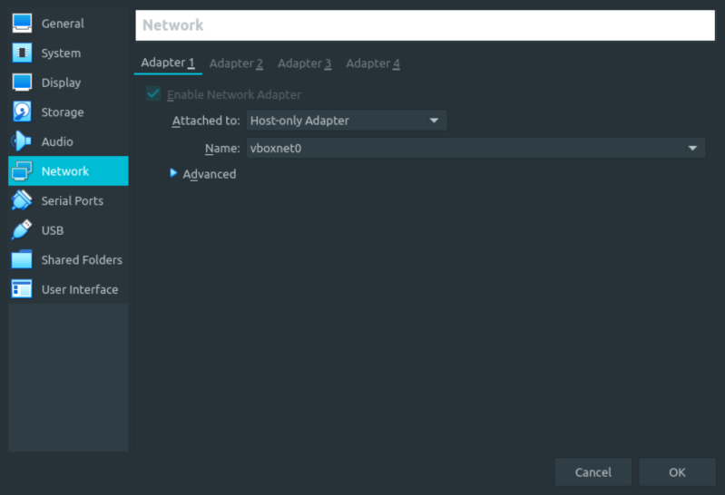
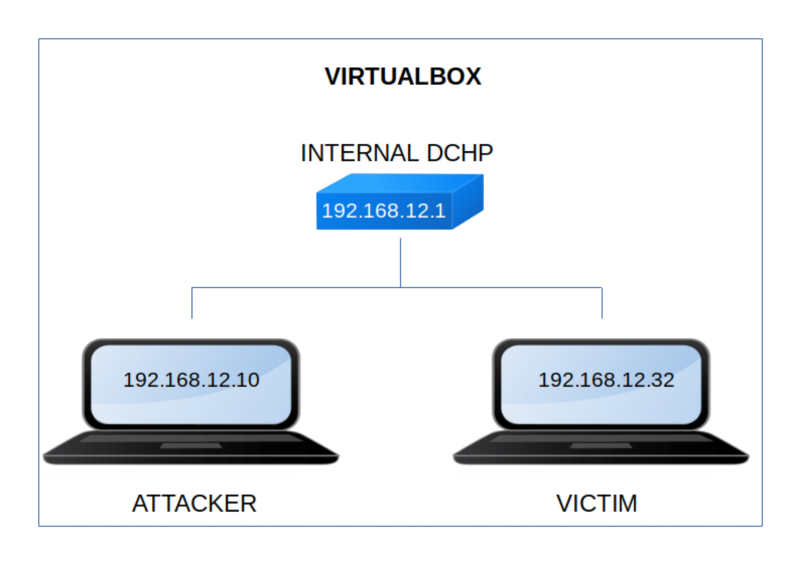

Hacksudo FOG
▸ Hacksudo FOG
▸ 1. Scan Network
▸ 2. Finding Services and Ports
▸ 3. Enumerate
▸ 3.1 Scan the website with nikto
▸ 3.2 Webserver with Gobuster
▸ 4. Exploitation
▸ 4.1 Search exploit and exploit db
▸ 4.2 FTP (First flag)
▸ 4.2.1 Download other files
▸ 4.3 SoundStego
▸ 4.4 Log in the CMS
▸ 4.5 Create a python a reverse shell
▸ 4.6 Netcat connection
▸ 4.7 Get a good pty shell (2nd flag)
▸ 4.8 Identify users
▸ 4.9 Identify SUID binaries
▸ 4.10 Read "/etc/shadow" file
▸ 4.11 Swith to user isro (3rd flag)
▸ 5. Privilege Escalation (4th flag)
Difficulty: Easy.
Flag: 4 flags.
Learning:
• Reconnaissance
Scan Network
Find services
• Enumerate
Scan website with Nikto
Scan webserver with Gobuster
• Exploitation
Search exploit for CMS
Find user's password for FTP with Hydra
Connect via FTP
Download file via FTP
Audio steganography
Decode Caesar cipher
Create python reverse shell
Connect via netcat
Get a good pty shell
Identify SUID binaries
Read “/etc/shadow”
Decript shadow hash with John the Ripper
Connect via SSH
• Privilege Escalation
Run python command to get 'root".
• Download (Mirror): https://download.vulnhub.com/hacksudo/hacksudo-FOG.zip
• Download (Torrent): https://download.vulnhub.com/hacksudo/hacksudo-FOG.zip.torrent
Install the machine on VirtualBox:
1. Download the file and extract it.
2. On Virtualbox choose File->Import Appliance.
3. Select the file “ova”.
4. Accept to import.


Watch your Machine IP.
$ ifconfig
Output:

Diagram
